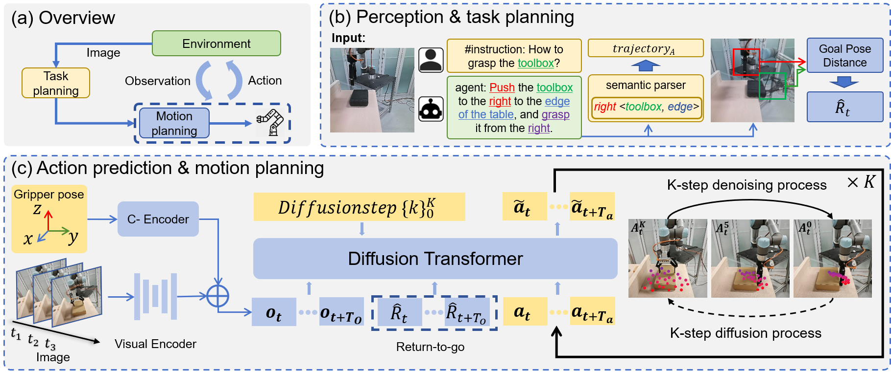

DexDiff: Towards Extrinsic Dexterity Manipulation of Ungraspable Objects in Unrestricted Environments

Abstract
Grasping large and flat objects (e.g. a book or a pan) is often regarded as an ungraspable task, which poses significant challenges due to the unreachable grasping poses. Previous works leverage Extrinsic Dexterity like walls or table edges to grasp such objects. However, they are limited to task-specific policies and lack task planning to find pre-grasp conditions. This makes it difficult to adapt to various environments and extrinsic dexterity constraints. Therefore, we present DexDiff, a robust robotic manipulation method for long-horizon planning with extrinsic dexterity. Specifically, we utilize a vision-language model (VLM) to perceive the environmental state and generate high-level task plans, followed by a goal-conditioned action diffusion (GCAD) model to predict the sequence of low-level actions. This model learns the low-level policy from offline data with the cumulative reward guided by high-level planning as the goal condition, which allows for improved prediction of robot actions. Experimental results demonstrate that our method not only effectively performs ungraspable tasks but also generalizes to previously unseen objects. It outperforms baselines by a 47% higher success rate in simulation and facilitates efficient deployment and manipulation in real-world scenarios.
Real-World Demo of Daily Life
The videos here are at 16x speed. (The grasping operation is at 1x speed)
(a) Bookshelf(seen)
(b) 3D Printer(unseen)
(c) Drawer(seen)
(d) Storage box(seen)
Real-world Demo of Push to Wall
The videos here are at 16x speed. (The grasping operation is at 1x speed)
(a) Box(seen)
(b) Toolbox(seen)
Real-world Demo of Push to Edge
The videos here are at 16x speed. (The grasping operation is at 1x speed)
(a) Box(seen)
(b) Folder(unseen)
(c) Pan(seen)
(d) Medicine cabinet(unseen)
Different Shapes of the Side of the Table
The videos here are at 16x speed. (The grasping operation is at 1x speed)
(a) Irregular edge(unseen)
(b) Curved edge(unseen)
Visualization of Rollouts on the Simulation

Depending on extrinsic dexterity structures, we get different high-level plans, and the proposed method enables precise robot manipulation on long-horizon tasks. (A) Broad, (B) Surround, (C) Basic, (D) Empty.